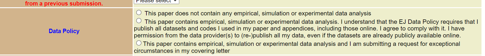

Before you submit your paper for the first time
Read here about our Data and Code Availability Policy (DCAP) and make sure you comply with all requirements before you submit the paper for the first time. Check the cases in which exemptions to the policy can be granted and the procedures to obtain them. If you don’t request the exemption at the time of first submission, you will not be able to do it later! Also, there may still be time to gain some insights from our best practice for reproducibility recommendations before you submit.
Data and Code Availability Policy
This is a reproduction of the official Data and Code Availability Policy of the Economic Journal, which can be found here. In case of discrepancy, the official policy always prevails to the reproduction presented here.
The Economic Journal requires authors of empirical, experimental or numerical papers to provide documentation of how their results were obtained in sufficient detail and accuracy to allow their results to be replicated. When you submit a paper for consideration, you will be asked to confirm that you are willing to comply with this policy. It is essential that you request a data exemption at the point of first submission if you face any restrictions that prevent you from publishing your data or, in general, from complying with any of the provisions of this policy. More details on this process are provided below.
Your paper will be accepted for final publication only after the results have been checked for reproducibility.
Our mission is to conduct the reproducibility checks as fast as possible. Please read the information on this website carefully, so we can achieve this goal. Please, also note the following warning:
The editorial board of the Economic Journal reserves the right to refuse publication of papers whose authors do not comply with the requirements set out in detail below for each type of paper.
Once the paper is accepted for publication, the replication package will be posted on the journal’s repository at zenodo.org and it will be linked with the paper. Alternative repositories may be acceptable as long as they are considered “trusted” by the journal. Submission on such online repositories indicates that the authors license users to download, copy, and modify this material. Users of the material must acknowledge all authors as the original creators and cite both the replication package and the paper accordingly.
Empirical papers
For papers that contain descriptive, econometric or simulated analysis of data, the authors must provide sufficient detail in the paper (or in an appendix) for the reader to understand the nature of the data used and how it was analyzed to produce the results. Importantly, they also must provide a replication package containing the following:
- A
READMEfile (README.pdf) describing the content of the package, the data sources (including citations), any manipulation that was carried out to generate the final datasets, how the data and programs can be used to replicate the results in the paper, the version of the software the code was written for and the respective versions of extra packages, as well as an estimate of the computation time. In case of commercially available or restricted access data sources, detailed instructions (e.g. extraction code) to obtain the datasets should be included in theREADMEfile. Click here for aREADMEtemplate which we strongly recommend to follow, and here for a highly recommendedREADMEonline generator app. - The raw datasets used in the paper and appendices (including online), including a complete, transparent and precise documentation describing all variables. If the data is provided in a proprietary format, such as in Stata format, then a non-proprietary version (
.csvfor instance) should also be provided for each data set. - All computer code necessary to produce the analysis data and to re-produce all releveant output in the paper: tables, figures, and in-text numbers appearing in the paper as well as supplements and appendices. In case of simulation studies and other proceedures which depend on a sequence of random numbers, the authors are requested to appropriately seed their random number generators, so that the exact numbers that are reported can be obtained. If the code uses additional packages that are not part of a standard distribution of a certain software package, then these packages should be included so that the code still runs after many years.
Authors who have requested an exemption for the publication of their datasets can either (1) grant temporary distance or physical access to the data to the journal’s staff for the sole purpose of replication (the data will not be published), or (2) supply a simulated dataset or a synthetic dataset instead of the actual dataset(s) used for the analysis for replication purposes. The nature of the data used for the reproducibility checks will be indicated on the published version of the paper.
Experimental Papers
For papers that contain analysis of experimental data (i.e. data which they generated with the help of experimental subjects), we require the authors to provide at the time of submission of the paper the following items (authors are asked to include all information as part of the main pdf file rather than as separate items):
- A document outlining the design of the experiment.
- A copy of the instructions given to participants, in both the original language and an English translation.
- Information on the selection and eligibility of participants.
- Explicit reference to the approval of the Institutional Review Board of one of the authors’ institutions (IRB approval number, date, name of the institution). Alternatively, authors (including all co-authors) who did not have an ethics board at their institution when the study was conducted may apply for an exemption. Authors who apply for an exemption will be expected to certify that the study complies with the requirements set out in this document. The editorial board of the Economic Journal reserves the right to deny exemptions.
In addition, before final acceptance, the authors will be asked to submit a replication package containing:
- A
READMEfile (README.pdf) describing the content of the package, the data sources (including citations), any manipulation that was carried out to generate the final datasets, how the data and programs can be used to replicate the results in the paper, the version of the software the code was written for and the respective versions of extra packages, as well as an estimate of the computation time. In case of commercially available or restricted access data sources, detailed instructions (e.g. extraction code) to obtain the datasets should be included in theREADMEfile. Click here for aREADMEtemplate which we strongly recommend to follow, and here for a highly recommendedREADMEonline generator app. - The programs used to analyze the data and/or run the experiment.
- The raw data collected from the experiment (also in non-proprietary format such as
.csv) - A document outlining the design of the experiment.
- A copy of the instructions given to participants, in both the original language and an English translation.
- Information on the selection and eligibility of participants.
- A copy of the IRB approval or confirmation that an exemption has been granted by the editorial board.
Apply to exemptions to the Data and Code Availability Policy
If you are not able to comply with some of the aspects of the Data and Code Availability Policy (e.g. because you are using restricted-access data or you cannot obtain permission to re-publish the data), you should request an exemption at the time of first submission of your paper. You can find a set of Frequently Asked Questions about the situations under which you can or cannot apply to an exemption to the data and code availability policy here.
If you want to request a Data Exemption, you need to select the second option for the Data Policy box during your submission process at the Editorial Express platform, as illustrated in figure Figure 1:

Additionally, attach a Cover Letter along with your paper in which you indicate the reasons why you believe you are entitled to an exemption to our data and code availability policy.
Once the paper is submitted, the Managing Editor will analyze whether (i) there are enough grounds to grant the exemption and (ii) the exemption or the nature of the data limits the interest of the paper. Based on her assessment of these two points, she will make one of the following decisions: (a) move forward with the process, sending your paper to referees, (b) summarily reject your paper, or (c) contact you asking to provide additional information, documentation, or any other requirement that she needs to assess the suitability of the requested exemption. The exemptions are tacitly granted by choosing option (a).
Once your paper is conditionally accepted, you will be requested to supply your replication package according to the guidelines specified here on this website. If an exemption to the Data and Code Availability Policy was granted, you will be requested to either provide the Data Editor (and, by extension, to the team of replicators) with temporary access to the data affected by the exemption for the sole purpose of implementing the reproducibility checks. Alternatively, when granting temporary access to the restricted data is not possible, you will be required to include in your package a synthetic or simulated dataset that allows users to run the code and check that it produces all outputs from the paper (and appendices), even if the results do not match those in the paper. You can find a set of FAQs questions about how to proceed with the replication package when an exemption to the Data and Code Availability Policy has been granted here.